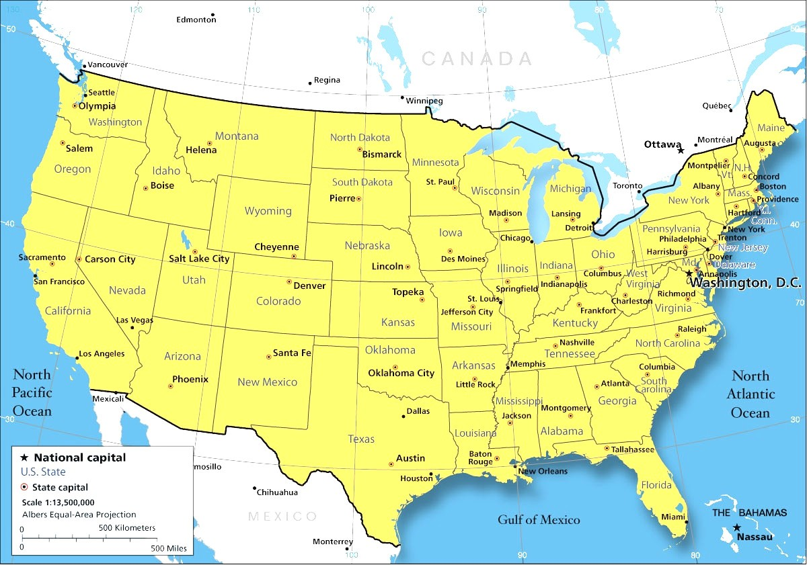

Washington
Washington has the most Hayden developement going on right now. There are 34 different sub divisions throughout Washington St. The Tri-Cities area has a record breaking amount of homes being made. Every sub division consist of 35-75 homes, depending on the sub division or area.
Oregon
Oregon is our second most developing State. We have 27 sub divisions throughout Oregon. These sub divisions consist of about 25- 65 homes. The sub divisions are a little smaller, but our quality doesnt change. Nor does or customer satisfacation.
Idaho
Idaho is our third state, we have 17 sub divisions throughout Idaho. The sub divisions are a little bigger ranging from 29-52 homes. All three locations have a total of 12 different floor plans/models.
You're Land
 Depending on the area, Hayden is willing to come build on you're land if you are not in one of these three states. You just have to contact Adam Jones, the head Superintendent. We strive to make all of our customers happy and will do our best to assist you if you are not in one of these three states.